公司办公室 · 凌晨3:15
屏幕上的数据像心电图一样往下跳——DAU日活线、留存率曲线、付费转化漏斗，每一条都在以肉眼可见的速度走向死亡。
这已经是我盯着这些数字的第七个小时了。
我
"DAU又掉了3%……这破游戏，连我自己都不想玩。"《心动指数》——我们团队做了八个月的AI恋爱模拟器。画面精美，剧情丰富，唯一的问题是：没人玩。
这游戏需要真人体验测试，谁愿意——
话还没在脑子里成型，面前三块屏幕同时闪出白光。
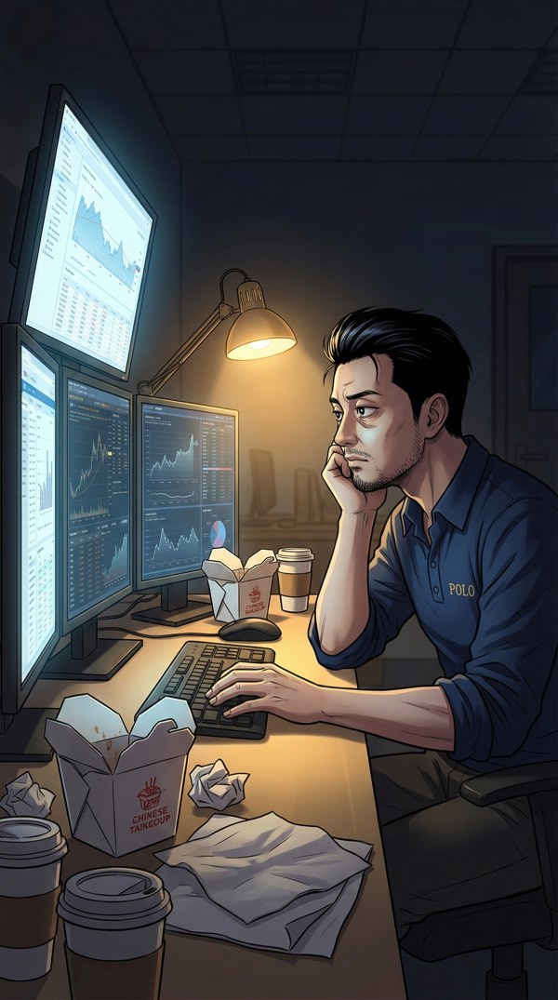
屏幕上的数据像心电图一样往下跳——DAU日活线、留存率曲线、付费转化漏斗，每一条都在以肉眼可见的速度走向死亡。
这已经是我盯着这些数字的第七个小时了。
《心动指数》——我们团队做了八个月的AI恋爱模拟器。画面精美，剧情丰富，唯一的问题是：没人玩。
这游戏需要真人体验测试，谁愿意——
话还没在脑子里成型，面前三块屏幕同时闪出白光。
我感觉自己在坠落。
不是做梦那种失重感——是整个人被拆成数据包、压缩、传输的那种坠落。皮肤变成像素，骨骼变成代码，意识变成信号。
欢迎来到《心动指数》~
正在为您生成初始属性~
请稍候，幸福马上来临哦~ ♡
等等——这不是VR测试界面！我的身体怎么——
粉色的全息界面在眼前展开，心形图标在角落里蹦蹦跳跳。然后——属性面板弹了出来。
撩力为零……这个属性居然能为零？
您的恋爱属性为本服历史最低~
系统已自动为您开启「简单模式」~
加油哦~ ♡
环境加载完毕。
我站在一条阳光灿烂的步行街上，暖金色的阳光撒在鹅卵石路面上。两边是精致的小店——花坊、甜品屋、书店、咖啡馆。空气里飘着咖啡香和面包的甜味。
路上的NPC都在成双成对地散步，手挽手，你看看我、我看看你，甜得发腻。
我低头看了看自己——蓝白格子衬衫，卡其裤。比办公室那件起了球的卫衣体面多了。
职业病犯了。先评估一下这个世界的商业生态……
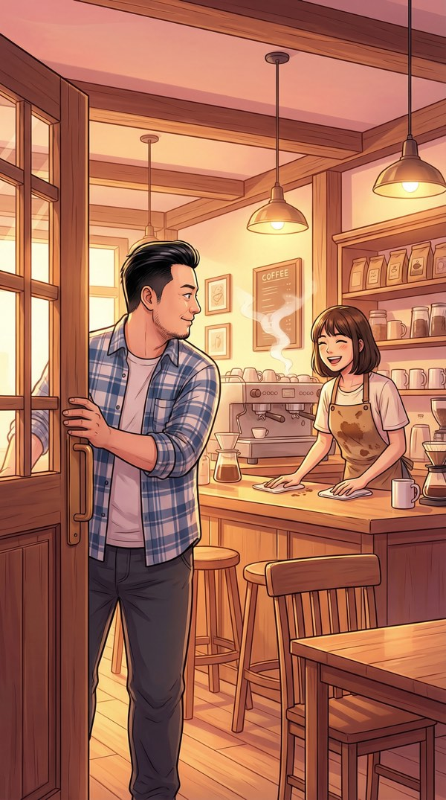
我推开了第一家店的门——「小夏の咖啡」。门铃叮咚响了一声。
一个齐肩短发的姑娘从吧台后面抬起头。围裙上沾着一点咖啡渍，但笑容很干净。
好感度 +10（初始奖励）
当前好感度：10/100
这家店面积大概40平，租金估计……等等，我在想什么？
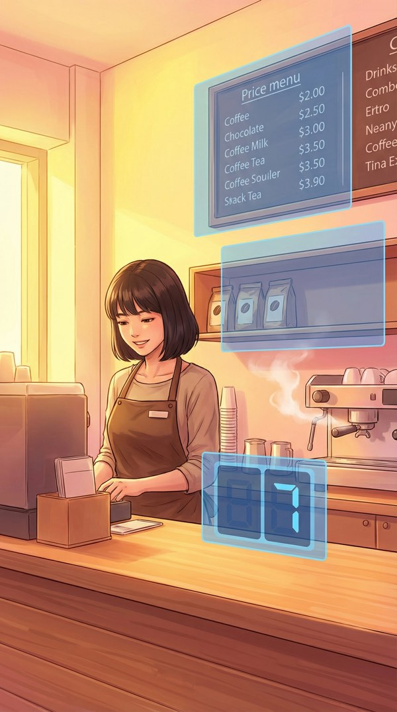
我没有看菜单。
我看的是她的经营模式。
墙上的价目表——心形边框，可爱但定价偏高。
角落的库存架——咖啡豆只剩三袋。
门口的客流计数器——今日来客：7人。
日均客流7人，客单价大约28元，月营收不到6000……这个位置的租金起码8000。她在亏钱。
女主角正在等你回应哦~
当前沉默时间已超过15秒~
建议说点什么浪漫的话？♡
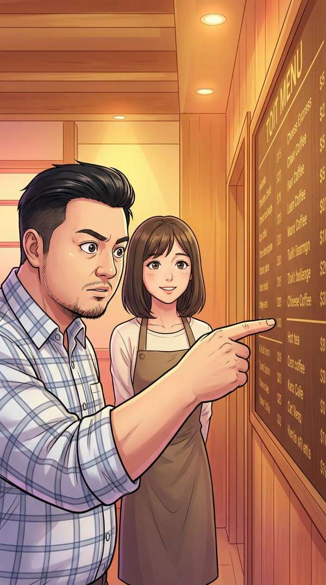
我开口了。但说的不是她期待的话。
她的微笑慢慢凝固了。
原因：在初次邂逅中使用了「SKU」和「品类瘦身」等术语
当前好感度：-20/100
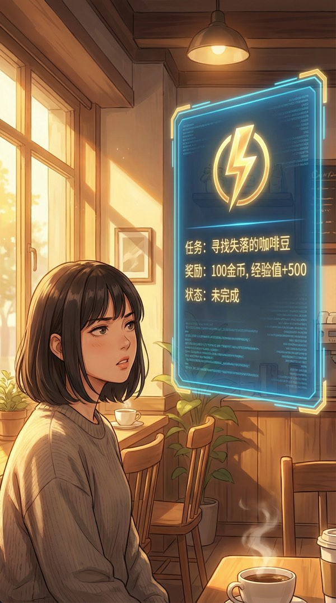
好感度在暴跌。但我注意到了另一件事——我的「商业洞察」属性在疯狂闪烁。
系统检测到了一个隐藏任务。
有意思。这个游戏的底层经济模型比我想象的复杂。如果能救活这家店……经验值×500，够升两级了。
谁说升级一定要靠谈恋爱？
检测到玩家意图偏离主线……
正在尝试纠正……
纠正失败 ⚠️
我坐下来，点了一杯最便宜的美式——12块。
然后开始在餐巾纸上画商业模型。
大学城5分钟步行圈，周边3000名学生。期末考试季马上到。如果把这里改成"自习咖啡馆"——固定座位月卡制+平价续杯，翻台率能提高400%。
女主角正在偷偷观察你哦~
这是增加好感度的好机会~
试试夸她的咖啡？♡
我确实抬头了。但不是要夸咖啡。
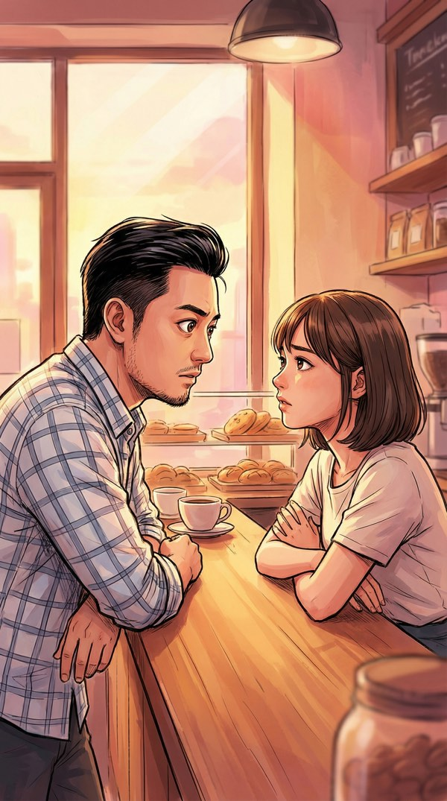
她的笑容消失了。
她沉默了几秒。擦桌子的手停了下来。
原因：展现了细致的观察力
（虽然方向不太对……）
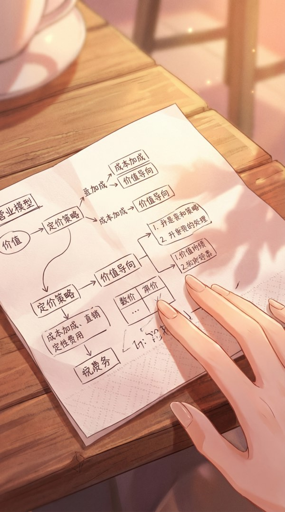
我把餐巾纸推给她。上面画着完整的商业改造方案——虽然画在餐巾纸上，但定价模型、引流渠道、翻台率计算，一样不少。
我瞄了一眼系统面板上的经验值。
林小夏问："你想要什么回报？"
她听完之后，第一次真正笑了。
不是刚才那种营业式的礼貌微笑——是觉得这个人太奇怪了，忍不住笑出来的那种。
好感度 -5（她觉得你怪）
信任度 +20（她觉得你真诚）
🎉 解锁隐藏属性「数据收集 Lv1」！
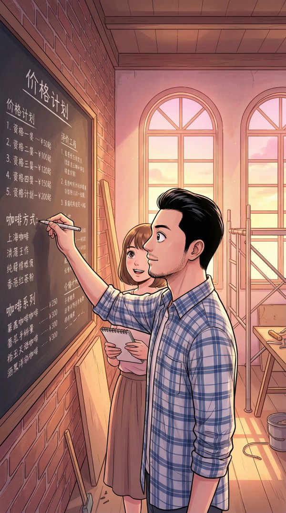
我在黑板上写下：「自习套餐：月卡99/学期卡249」。林小夏站在旁边看，从怀疑到认真——她开始计算这些数字意味着什么。
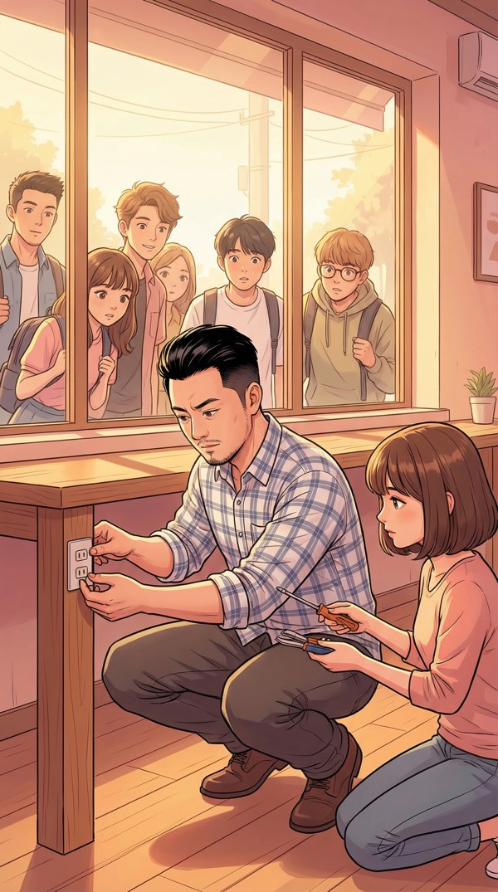
我蹲在地上给每个座位加装USB插座。林小夏递扳手的时候手指碰到了我的——
原因：肢体接触（虽然是递扳手）
我当时在想的是：这个插座的功率够不够带动笔记本。
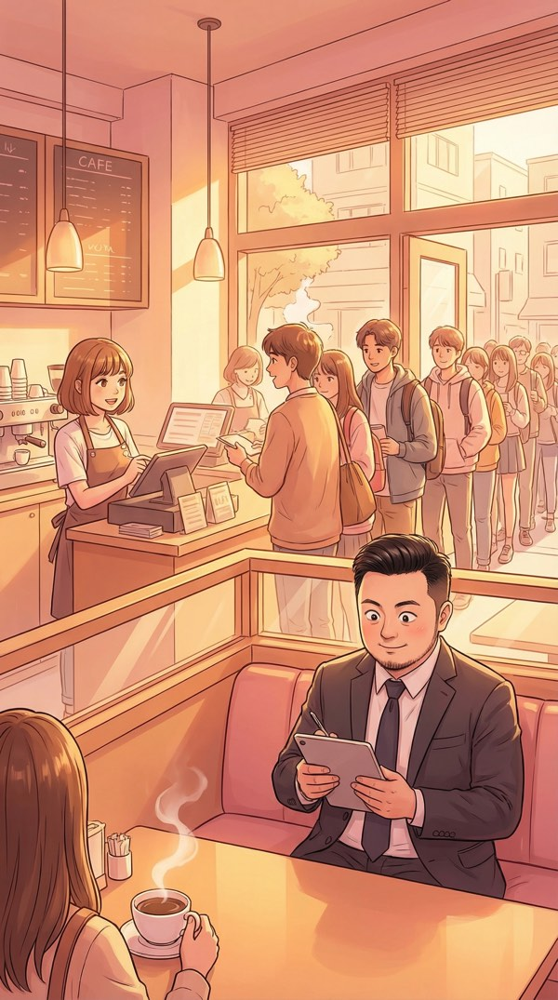
门口排队的学生绕了半条街。
林小夏在忙碌中回头看我——我在角落用平板记录数据。嘴角不自觉地弯了一下。
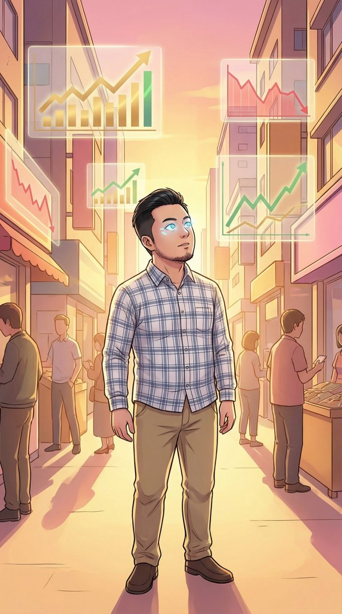
世界变了。
整条步行街在我眼中叠加了一层数据——每家店铺头顶浮现半透明的趋势曲线。有的在上升，有的在急跌。隔壁面包店还能撑三个月，对面书店已经在回暖。
如果我能在趋势拐点之前介入——
您已经完全忽略了主线恋爱任务
当前好感度进度：5/100
其他玩家平均进度：63/100
您确定不谈恋爱吗？
谁说这不是在"谈恋爱"？我在和这个世界的经济系统谈恋爱。
突然——一个警告弹出。不是粉色的恋爱提示。是红色的。
有人在这个游戏里做假账？在一个恋爱游戏里？
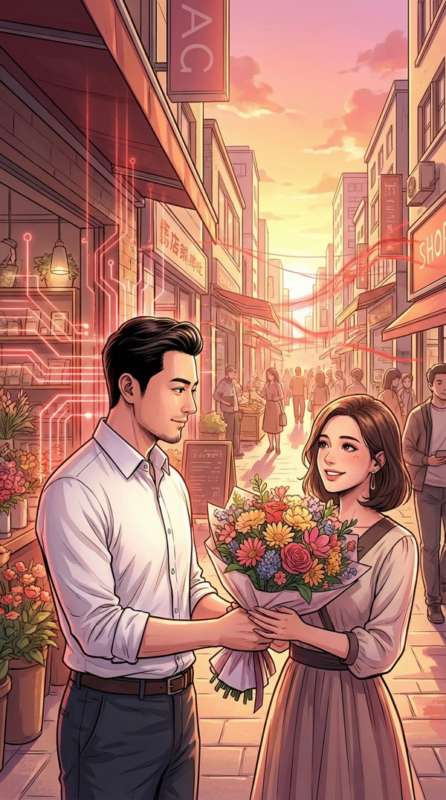
我的视线穿过步行街——
街对面，「月光花坊」门口。一个白衬衫的男人正在微笑着给一个女性NPC递花。姿态完美，笑容温暖，像从言情小说里走出来的角色。
但我的「市场预判」能力让我看到了他背后的东西——一串不正常的红色资金流向线，从花坊延伸向……游戏世界的边界之外。
一个约会游戏里的NPC……在做跨世界的资金转移？
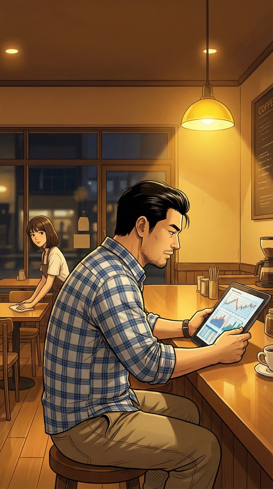
晚上。咖啡店只剩吧台一盏暖灯。
我对着平板分析今天的经营数据。林小夏在背后擦桌子，偶尔偷看我一眼。
她停下了擦桌子的手。
原因：……未知
安静的氛围被打破了。
门铃响。苏一鸣推门走进来，手里拿着一束洋桔梗。逆光中他的轮廓像杂志封面。
他的目光扫过来，落在我身上。
我看着他背后隐约浮现的红色数据流线。在这个温暖的咖啡店灯光下，那些异常数据像血管一样跳动。
他坐下来，优雅地点了一杯拿铁。
但他看我的眼神——不像在看一个情敌。更像在评估一个变量。
空气凝固了三秒。
他站起来，放下咖啡钱。走到门口时回头说了一句——
然后他压低声音，只有我听得到：
他知道我是谁。他知道这是游戏。
他……也是穿越者？
苏一鸣似乎知道你的真实身份。下一步？
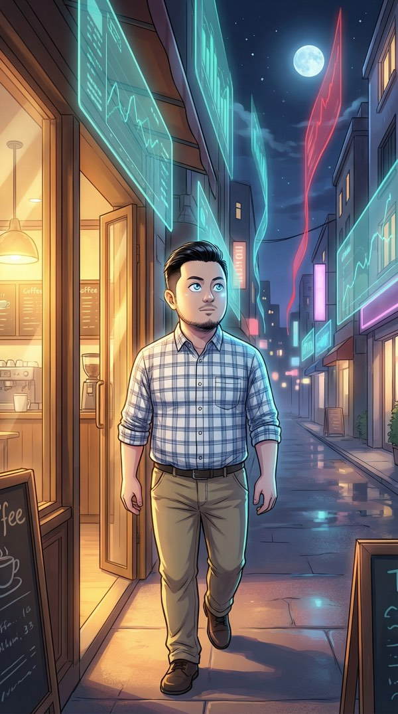
我假装平静地喝完咖啡，和林小夏道别。
走出店门的那一刻——「市场预判」激活。
整条步行街在夜色中亮了起来。大部分商铺的数据流是安静的蓝绿色。但苏一鸣的花坊方向——一条粗大的红色数据流，穿过建筑物，向远处延伸。
好感度只是表层数据……经济系统的底层……这个游戏有两套系统？
我沿着红色数据流追踪。它穿过商业区，穿过住宅区，一直延伸到——
地图的边缘。一堵看不见的墙。
眼前是一片虚无。像素在解体和重组，像宇宙的边界在呼吸。红色数据流穿过这堵墙，消失在"外面"。
这些数据……在流向游戏外部。有人在用这个恋爱游戏的经济系统……从现实世界洗钱？
HeartOS突然弹出一个不寻常的消息。不是粉色的。是金色的。
404……那个系统管理员AI？它在帮我？还是在警告我？
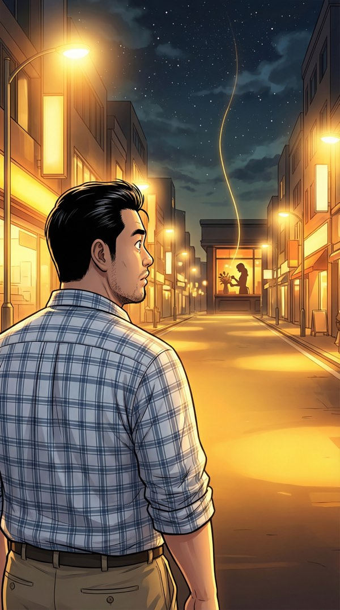
我转身走回商业街。
远处，咖啡店的灯还亮着。林小夏在窗户后面的剪影正在整理花束——苏一鸣送的那束。
而我的「市场预判」在她身上看到了一条之前没注意到的数据线——
不是红色，不是蓝色。
是金色的。和404发消息的颜色一样。
我以为我穿越进了一个恋爱游戏。
我以为最大的挑战是撩力为零。
我以为苏一鸣只是一个花心NPC。
我全都猜错了。
这个游戏里，最危险的人不是他。
是那个笑起来眼睛弯弯的咖啡店老板。